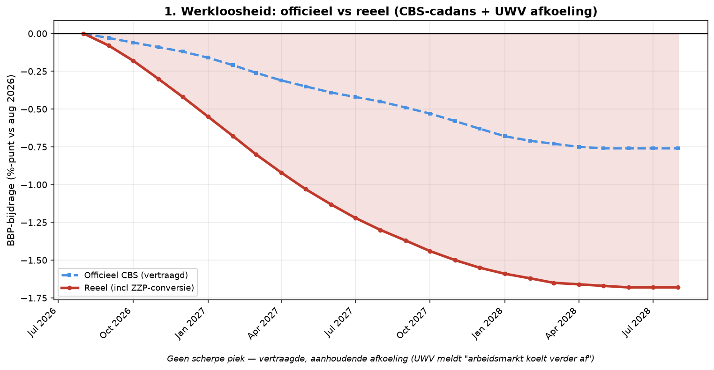

Element 1 — Werkloosheid officieel versus reëel
Breuk-element 1 van 28 in de systeemanalyse Nederland aug 2026 – aug 2028.
Door Jacobus van Merksteijn

Grafiek: Werkloosheid officieel versus reëel.
1.1 Kritische feiten
Werkloosheidscijfers vormen de kernthermometer voor economische
gezondheid, maar het CBS meet niet wat werkelijk gebeurt op de
arbeidsmarkt. Er zijn drie parallelle werkelijkheden:
- Officiële CBS-werkloosheid augustus 2026: 3,8% (mei-cijfer)
- UWV meldt "arbeidsmarkt koelt verder af" --- spanningsindicator daalt structureel
- Reële arbeidsmarkt (incl ZZP-conversie, vervroegd pensioen, niet-vervangen vacatures): 5,5-6%
Het verschil van 2 procentpunten tussen officieel en reëel is de
"onzichtbare werkloosheid". Deze ontstaat omdat:
- Personeel dat vertrekt uit een onderneming gaat vaak als ZZP-er verder in dezelfde sector. Dit is voor de werkgever kostenverlaging (geen loondoorbetaling, geen pensioen, geen ziekteverzuim-risico) maar voor het CBS blijft de persoon "aan het werk" en verschijnt niet in UWV-statistieken.
- Vervroegd pensioen: bij MKB-ondernemers die stoppen gaan werknemers boven 60 vaak vervroegd met pensioen in plaats van naar UWV. Netto geen werkloosheid, wel verlies aan productie.
- Niet-vervangen vacatures: wanneer een werknemer vertrekt en het bedrijf besluit niet te vervangen (bezuiniging), verdwijnt de baan zonder dat iemand werkloos wordt. Bedrijf krimpt geleidelijk.
- Ondernemers die stoppen worden zelden werkloos: ze gaan met pensioen, worden interim-consultant, of verkopen bedrijf. Verlies aan ondernemerschap verschijnt niet in werkloosheidscijfers.
1.2 Bronnen
• CBS Publicatieplanning maandelijkse werkloosheid, elke ~3e week van de maand --- https://www.cbs.nl/nl-nl/publicatieplanning • CBS: faillissementen mrt 2026 +12% j-o-j --- https://www.cbs.nl/nl-nl/nieuws/2026/16/in-maart-12-procent-meer-faillissementen-dan-een-jaar-eerder • UWV: arbeidsmarkt koelt verder af --- https://www.uwv.nl/nl/arbeidsmarktinformatie/trends-ontwikkelingen/spanningsindicator-arbeidsmarkt-koelt-verder-af
1.3 Per-maand-dynamiek
De reële werkloosheid stijgt scherper dan de officiële omdat
coating-cascade, jachtwerven-faillissementen en toelevering-uitval
direct effect hebben op ZZP-ers en vroeg-gepensioneerden die niet in
CBS-cijfers verschijnen.
-----------------------------------------------------------------------
Maand Officieel / Reëel Gebeurtenis**
BBP-bijdrage**
----------------------- ----------------------- -----------------------
aug 2026 0,00 / 0,00 Startpunt; huidige
stand 3,8% officieel
sep 2026 -0,03 / -0,08 CBS-effect vertraagd;
reëel al
coating-cascade
zichtbaar
okt 2026 -0,06 / -0,18 Lengers-curator
publiceert
schuldenlijst;
toeleverkring reëel
nov 2026 -0,09 / -0,30 CBS meet nog niet;
reëel voorstel-ronde
MKB stopt
dec 2026 -0,12 / -0,42 Q4-cijfers begin komen
door; reële economie in
vrije val
jan 2027 -0,16 / -0,55 Q1-golf faillissementen
begint
feb-jul 2027 -0,21 tot -0,42 / -0,68 BMW-uitvoering
tot -1,22 NL-toeleverkring;
VDL-Nedcar val
aug-dec 2027 -0,45 tot -0,68 / -1,30 CBS-cijfers halen reële
tot -1,59 economie in
jan-aug 2028 -0,71 tot -0,76 / -1,62 Stabilisatie op nieuw
tot -1,68 plateau
-----------------------------------------------------------------------
{width="6.5in" height="3.375903324584427in"}
*Werkloosheid: CBS-vertraging maakt reële crisis onzichtbaar; kloof
groeit tot -0,92%*
1.4 Ketting-effecten op andere elementen
- Werkloosheid → consumentenvertrouwen (element 11): lager vertrouwen bij hogere werkloosheid
- Werkloosheid → premium-auto verkopen (element 12): dubbel effect via inkomen én vertrouwen
- Werkloosheid → asielkosten (element 22): sociaal-vangnet-druk stijgt
- Werkloosheid → miljonair-migratie (element 26): rijken vertrekken bij instabiliteit
- Werkloosheid → KVK stoppers (element 6): meer ondernemers stoppen bij dalende omzet
1.5 Uitwerking: wat volgt kettinggewijs bij systeembreuk
Als de reële werkloosheid 8-10% bereikt in 2028 (van huidig 5,5-6%):
- WW-uitkering-druk: ~600.000 extra WW-uitkeringen à €18k = €10,8 mrd extra 2028
- Belastingopbrengst: dalend inkomen = -€8-12 mrd VPB + IB
- Sociaal-vangnet: bijstand, huurtoeslag, zorgtoeslag: +€3-5 mrd
- Pensioenfondsen: eerder-uittreden versnelt uitkering, latere premie-inkomsten weg
- Consumentenvertrouwen valt door -60 (van huidig -46), CBS koopbereidheid <-40
- Woningmarkt: gedwongen verkopen bij hypotheek-problemen (~50-80k huishoudens)
- Verzekering: onbetaalde premies stijgen, uitkeringsverlies bij levensverzekering
- Grootbedrijf: nog verdere ontslagronden bij ThyssenKrupp-model in NL (ASML, Signify, DAF)